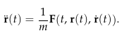
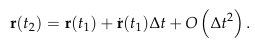
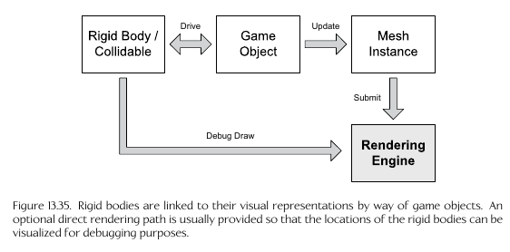
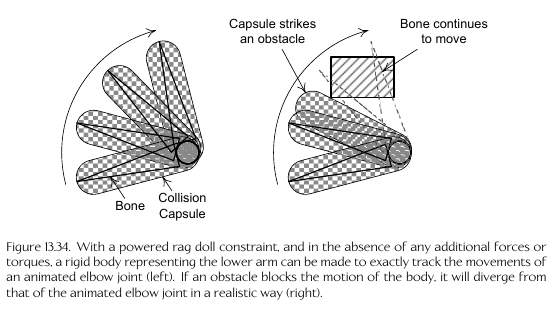

Popular Collision and Physics Libraries
Collidable Representation
- The intersection shapes/primitives for an object in the scene are stored via its own
geometry and transformation (its 'collision representation')
- Some common intersectable shapes used include
- sphere
- capsule
- Axis Aligned Bounding Box (AABB)
- Discrete Oriented Polytopes (DOP)
- Polygon Soup (Poly Soup)
- These are also called 'collision volumes'
- Scene objects can contain multiple collision primitives
representing them (e.g. a chair can be represented by a cube
and a triangular prism)

- This can also be used for early-termination checking:
a coarse check of a larger,wrapping primitive can be
used as an easy first-check for intersection
- Usually the collision engine contains a 'collision/physics world'
in which all collidable objects are represented
- benefit of cache coherency
Convex/Concave
- Usually convex shapes are used as a line can only enter
and exit a convex shape once (concave adds more complexity)
- If a concave shape is shrink-wrapped, there will be air
pockets; convex shapes will have NO air pockets when
shrink wrapped
Poly Soup
- A collection of non-convex shapes, not necessarily enclosed
or in a 'shape' form
- Used to represent complex static geometry like terrain and buildings
- Front-face is used to represent 'outside' (via stored winding
order) and back-face represents 'inside'
Sphere intersection test
- s = c - p
- if |s| <= r, then p is inside the sphere
- c = sphere center, p = test point, r = sphere radius
Sphere intersecting other sphere test
- s = c1 - c2
- if |s|2 <= (r1 + r2)2, then
the spheres intersect
- Difference squared is used to prevent square root calculation (|s|)
for performance
Separating axis theorem
- If there is a line that can separate the projection of
two convex shapes, then they do not intersect


GJK Algorithm
- Works for intersection testing between arbitrary polytopes
(convex polygons in 2d, convex polyhedra in 3d)
- http://mollyrocket.com/849
- Uses the 'minkowski difference'
- Takes difference between all points within shape A and B
- If the set contains the origin point, then the shapes intersect
- since any point minus itself is 0 or the origin
- The minkowski difference between two convex shapes is also a
convex shape
- Attempts to create a tetrahedron that surrounds the origin from
the minkowski difference set
- If this tetrahdron cannot be created, then the shapes do not intersect


Paper Bullet Problem (Tunneling)
- If an object is moving faster than its size each, it can
"skip over" an intersection
- Can be solved via
- Swept Shapes: create a new shape as the combination
of the previous and next frame

- Only works well for moving in a straight line
- Continuous Collision Detection (CCD)
- Finds the earliest 'Time of Impact' (TOI) between
two objects over a time interval
- Collision detection can be expensive, esp. if you check
every possible object with each other (O(n2))
- Can use techniques we've seen before in the render
such as spacial partitioning
- Octtrees
- Binary Space Parititioning Trees (BSPs)
- etc.
- Other techniques:
- Temporal Coherency (Save calculated values that haven't
changed from the previous frame)
- Broad Phase, Midphase, and Narrow Phase
- Broad Phase: Use AABBs to determine which collidables
are potentially intersecting
- Midphase: Use coarse bounding volumes, such as spheres
for another early termination step
- Narrow Phase: Use the individual primitives for
the closest/specific possible collision detection
- Sweep and Prune algorithm
- sort the minimum and maximum dimensions of the AABBs
along the x,y,z axes then check for intersection
along the sorted list
- Can reduce O(n log n) to O(n)
Collision Queries
- Most physics engines support checking things such as
"What is the earliest intersection if I move this character
in this direction" or "find all enemy objects within this
radius"
Raycasting
- Have paramtetric line segment p(t) = p0 + td, 0<=t<=1
- Check for intersection along this line
- Example ray casting usage: check for line of sight
from an AI to the character by ray casting from the
AI point of view to the main characters chest, and seeing
if any intersections get in the way
Shape Casting
- Move a collision volume along a parametric line segment
and check for intersections along the way
- This is more complex as you can have multiple
collision points at the same time; usually returns
an array of collisions


- Can be used to move 3d objects, and do things like
automatically move up a curb or move left/right against
a wall
Phantoms
- Collision objects which can intersect with regular objects,
but regular objects cannot collide with them
- regular collisions with a phantom are ignored, but a phantom
can still collide with regular objects
Collision Filtering
- Ability to group collision types together to only
check between collisions of the same types
- Uses masking or layers (e.g. a grouping bitmask)
- Also ability to turn collision on/off for an object
Collision Materials
- Holds information such as friction, sound effects,
particle effects, etc. for an object types such as skin,
wood, metal, etc.
Ordinary Differential Equations (ODEs)
- Used in physics engines for calculations
- Utilize derivatives and linear integration
- An ODE has a single independant variable, such as time,
as the input to a function, where the ODE is a function
containing derivatives up to the n-1th order:
- For example, the classic force = mass * acceleration (F=ma)
is more accurately represented as an ODE:
- 
- r**(t) is acceleration (2nd derivative of position), r*(t) is velocity (first derivative of position)
- Used to approximate 'Taylor Series' (1+x+x2+x3 ... inf.)
- The error of the ODE is represented via big O notation as O(nx),
where x is the number after the highest power in the equation
- 
- The error is Δt2 because the highest power
the approximation goes is 1; t2 and above do
not effect the calculation
Common ODE methods
- Explicit Euler method: good for when velocity is nearly constant, otherwise inaccurate
- Verlet Integration
- Regular Verlet
- Velocity Verlet
Plastic vs. Elastic Collisions
- Elastic collisions have 'bounce' - opposite reactions
to a force
- Plastic collisions have no bounce - no reactive
force when a collision happens
Newton's law of restitutaion for instantaneous collisions with no friction
- Assumes the following when a collision happens:
- An instantaneous force; it is an 'impulse'
- There is no friction at the contact point
- There is a coefficient of restitutaion describing
how much energy is lost.
- 1 = no energy lost; is an elastic collision
- 0 = all enery lost; is a plastic collision
Penalty Forces
- Manually introduce penalty forces to
force interpenatrating objects apart
- Optimization compared to resolving all
collisions via the physical simulation
- SONY PS3 Rubber Duck demo used this
Coming to Rest
- Forcing an object to stop as otherwise it's forces
will never completely reach zero due to floating
point error and non-exact algorithms
- Can be achieved by putting the physics on
an object 'to sleep' if its close enough
to zero force and meeting required criteria
Gravity
- Usually set globally in the physics engine
Torque and Force
- A torque is a force off-center from the center of mass
on the object, causing a rotational force
- Force: applied to the center of mass, thus causing
pure movement and not rotation
Impulse
- Instantanius change in velocity/momentum; duration
too short for time step Δt to handle
properly
The collision/physics step
Updates every frame:
- Forces and Torques integrated by time step Δt
- Collision Detection library checks for new contact
- Resolve/Handle Collisions
- Constraints Resolved by the Constraint Solver
Attaching physics to a game object

Game-Driven vs. Physics-Driven
- Game Driven: the game manually controls object movement
- Physics Driven: The physics/collision system controls
object movement
- A single object can switch between these two
properties as required
Constraint
- A restriction on the movement of an object
(reduces degrees of freedom from normal 6)
- For example, a hinge forcing a door to rotate
only around a single axis
Powered Constraint
- Constraints where the translation/orientation can
be controller externally, such as from the animation
system
- For example, an elbow constraint on a human character
can be forced to limit its rotation if the forearm
further up the skeleton is hitting another object
blocking its path
- 
Rag Dolls
- Are implemented via rigid bodies connected
via constraints
- Uses "Constraint chains" to improve the stability
of the simulation
Fixed Bodies
- Collision only bodies that do not take part in
dynamics simulation
- Provide an optimization/performance boost
Physics Simulation Update Frame Steps
- Update Game-Driven Rigid Bodies
- Update phantoms
- Update forces, apply impulses, adjust constraints
- Step the Simlulation
- Numerically integrate equations
- Collision Detection
- Apply Constraints
- Update physics-driven game objects
- Query Phantoms
- Perform collision cast queries
Bullet Ray Casting / Bullet Traces
- Ray casts are good if the bullet is moving
in a straight line
- to account for gravity causing the bullet to drop
or similar, the bullet can be modeled as a real rigid
body with gravity applied
- Throwing bricks/bottles in The Last of Us does this
Collision vs. Visible Geometry
- To avoid case where it looks like the bullet
hit the target but not hit was registered, due to the
collision object not exactly matching the rendered object,
can instead check against a rendered texture which a pixel
represents which object it is, and check against that
Explosions
- Can have the explosion apply impulses to objects
within its radius
- Can have animations for characters/objects to react
to the explosion
- Can have animation system apply a force to foliage,
such as swaying/bending plants, grass, trees, etc.
due to the shock wave
Destructable Objects
- Can be made up of many smaller rigid body objects
- Possibility to have two versions of the object:
a non-desructable, single-piece object and then
the desructabl, many-piece version. Swap between the
two as necessary
Camera collision
Some tricks/things to keep in mind when implementing a third
person camera, to avoid the camera hitting things or going
inside things
- Zooming in to avoid collisions
- Be careful with horizontal angle adjustment: too much can
mess up the player's aim or focus, for example.
- Good to limit depending if the player is in combat or not
- be careful to limit vertical movement, e.g. so the camera doesn't
end up pointing straight down at the character's head
- Avoid objects between the camera and the player by either swinging
the camera around the object or making the object transparent
Current Areas of research for physics in games
- Deformable Bodies - DMM Engine
- Cloth - Havok Engine
- Hair - can be implemented via cloth with a transparent hair texture
- Water Surface simulations/buoyancy
- General Fluid Dynamics Simulations
- Physically Based Audio Synthesis
- GPGPU - Naughty Dog Cloth Engine runs on the PS4 GPU